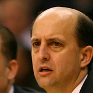
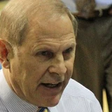
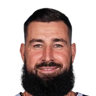

“We had 17 games left and I felt like we were going to try to finish strong. Me and Kevin (Love) were talking about this the other day. Feel like it’s very important for us to get these games because we have played just 11 games under Coach J.B. (Bickerstaff), so we’re still trying to understand him and he’s still trying to understand us as the head coach, which is a big difference. I feel like we need these games back. But it’s a hard decision to make during this tough time.”
What NBA players and coaches have said about JB Bickerstaff
15 quotes about JB Bickerstaff from 15 players, coaches and executives, newest first. Each one links to its original source.
Best quotes
Rubio:
“Since Day 1 I fell in love with the culture here. I fell in love with how they treat everybody... I think what [Bickerstaff] built here, is something special.”
Omari Sankofa II:Chauncey Billups on why JB Bickerstaff is a good coach:
“He was born in it, grew up in it, was taught very well by Bernie. He’s always been a defense-minded, tough-minded coach that holds everyone accountable. And that’s good … he knows when to be on them and when to let them live a little bit.”
What JB Bickerstaff has said about other players and coaches →
Quotes per season
Who talks about JB Bickerstaff most
 Cade Cunningham1 quote
Cade Cunningham1 quote Chauncey Billups1 quote
Chauncey Billups1 quote Chris Bosh1 quote
Chris Bosh1 quote- Chris Finch1 quote
- Chris Wallace1 quote
 Collin Sexton1 quote
Collin Sexton1 quote Daryl Morey1 quote
Daryl Morey1 quote
Jeff Van Gundy1 quote
John Beilein1 quote
Jonas Valanciunas1 quote- Lindsay Gottlieb1 quote
 Marcus Morris1 quote
Marcus Morris1 quote
Back and forth
2025-26
2 quotesCade Cunningham on his bond with Bickerstaff:
“I've had plenty of talks with him just about trying to find answers in my life, trying to figure things out and just asking for his advice,”
Coty M. Davis:Trajan Langdon on the addition of Caris LeVert:
“The special thing about Caris, you can plug and play him with just about everyone... I am confident that J.B. (Bickerstaff) is going to find a good role for him.”
2024-25
2 quotesChris Finch on JB Bickerstaff:
“It’s incredible. He’s given them an identity. Everywhere he’s been he’s done the same things — they’re tough, they defend …I voted for him for Coach of the Year. For me it’s not even a contest, what he’s done there.”
Omari Sankofa II:Chauncey Billups on why JB Bickerstaff is a good coach:
“He was born in it, grew up in it, was taught very well by Bernie. He’s always been a defense-minded, tough-minded coach that holds everyone accountable. And that’s good … he knows when to be on them and when to let them live a little bit.”
2023-24
2 quotes@Marcus Morris:
“Honestly yeah, I kind of seen it,sorry to say it... I think [J. B. Bickerstaff's] time just ran out.”
Rick Carlisle:
“I thought JB Bickerstaff did an amazing job. That was a complete culture makeover there.”
2022-23
1 quoteRubio:
“Since Day 1 I fell in love with the culture here. I fell in love with how they treat everybody... I think what [Bickerstaff] built here, is something special.”
2020-21
1 quoteLindsay Gottlieb:
“I am very thankful for the opportunity to serve as an Assistant Coach with the Cavaliers for the last two years. This has truly been a basketball dream come true for me to work not only in the NBA, but hand-in-hand with this incredible coaching staffthat has taught me so much. I’d especially like to thank Koby Altman and J.B. Bickerstaff for believing in me and providing an inclusive environment to enhance my coaching acumen.”
Lindsay Gottlieb on JB Bickerstaff, Koby AltmanNBA.com
2019-20
2 quotes“We had 17 games left and I felt like we were going to try to finish strong. Me and Kevin (Love) were talking about this the other day. Feel like it’s very important for us to get these games because we have played just 11 games under Coach J.B. (Bickerstaff), so we’re still trying to understand him and he’s still trying to understand us as the head coach, which is a big difference. I feel like we need these games back. But it’s a hard decision to make during this tough time.”
John Beilein:
“I also would not be doing this now, during the season, if J.B. Bickerstaff was not ready and capable to assume the head coaching role immediately and continue the rebuilding process that we have started. For 45 years and more than 1,300 games, my journey as a basketball coach has been a dream come true.”
2018-19
1 quoteJonas Valanciunas on JB Bickerstaff firing:
“It was tough. He liked to play through bigs and I liked how he controlled the team. I think he is really a good coach, but this is the front office decision and I respect it. We have to move forward.”
2017-18
1 quoteGriz GM Chris Wallace on Bickerstaff:
“J.B. has connected with our players and earned their respect throughout his time in Memphis, and we have been pleased with his role in developing our young players. We are excited to see him coach with a full off-season and a healthy roster”
2015-16
3 quotesAlex Kennedy:Jeff Van Gundy:
“[JB Bickerstaff] should never have to beg players for energy, effort and unselfishness. That should be a given every day.”
Ethan J. Skolnick:Chris Bosh on double teams:
“I told Bickerstaff he made me feel special. He made me feel like it was a first date.”
Daryl Morey on Bickerstaff’s future with the Rockets:
“We committed to him to go through this season. He’s done an excellent job to this point. When the season ends, we’re obviously going to have a tough decision. And he’s very good – he’ll have a tough decision, too. How well he’s done has put a spotlight on him.”